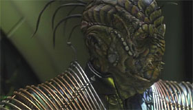
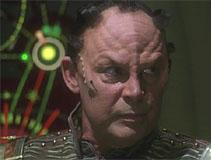

Xindi |
Organizzazione formata da cinque specie differenti in conflitto fra di loro il cui pianeta originario
si trovava nella Distesa
delfica ed è andato distrutto nel
2030 circa come atto finale di una guerra civile tra le specie durata un
secolo quando sono esplosi gli ordigni collocati lungo le otto faglie tettoniche
principali del pianeta dalle forze unite dei Rettili e degli Insettoidi. I sopravvissuti alla distruzione del pianeta hanno occupato vari pianeti
della Distesa
delfica (The Shipment). In seguito alla
distruzione del pianeta degli Xindi, è stato formato un organismo, il Consiglio,
con lo scopo di trovare una nuova casa e di riunificare le specie xindi (Stratagem);
la sala del Consiglio è ospitata all'interno di una specie di monumento
costruito circa 4.000 anni prima
dalla sesta specie Xindi, quella estinta, quindi gli Xindi possedevano già allora
una tecnologia per il viaggio interstellare (The Council).
Il Consiglio è stato sciolto definitivamente nel 2154
a causa delle divergenze conseguenti l'attacco alla
Terra (The Council).
I medici xindi vengono addestrati con ologrammi biometrici anziché con cadaveri
(The Council).
Le specie degli Xindi sono:
| Specie rettiliforme, che ha attaccato la Terra nell'aprile del 2153. Si nutrono di roditori molto simili ai ratti terrestri. |  |
| Specie acquatica. Secondo un detto Xindi, è più semplice contare le stelle in cielo che far arrivare gli acquatici ad una decisione (The Council). |
|
| Specie umanoide. Il loro sangue è rosso (Stratagem). |  |
| Specie insettoide. L'aspettativa di vita media di un membro di questa specie è di 12 anni (Hatchery). I loro nomi si allungano con l'età, diventando sempre più difficili da pronunciare (The Council). La loro lingua contempla 67 dialetti (The Council). Non hanno sessi differenziati, quindi ogni adulto è in grado di produrre alcuni grappoli di uova; in alcuni casi le uova deposte secernono un liquido contenente una neurotossina in grado di generare, in chi viene colpito da esso, un attaccamento morboso e ossessivo al nido (Hatchery). |
|
| Specie arborea (Extinction). |
|
| Specie avicola estinta a causa della guerra che ha portato alla distruzione del pianeta degli Xindi (The Shipment). |
I percorsi neurali delle specie umanoide e rettiliforme sono identici (Stratagem). Secondo alcune informazioni apprese da una fazione degli Xindi nel corso
della guerra fredda temporale, nella seconda metà del 2500 gli
Umani stermineranno gli Xindi; dopo aver
ricevuto questa informazione, una fazione degli Xindi invia una sonda sulla
Terra che arriva nell'aprile del
2153 e causa sette milioni di
vittime. Questa sonda si rivela essere un test, in quanto l'intenzione della
fazione degli Xindi che ha attaccato è di distruggere la Terra con un'arma
che è ancora in fase di realizzazione; per far fronte all'eventualità che la
progettazione di quest'arma dovesse tardare o fallire, un gruppo di Xindi studia
autonomamente la realizzazione di un'arma biologica (Rajiin).
Per il viaggio interstellare gli Xindi posseggono sia la tecnologia della
curvatura, sia una tecnologia simile ad un vortice completamente sconosciuta ai
terrestri.